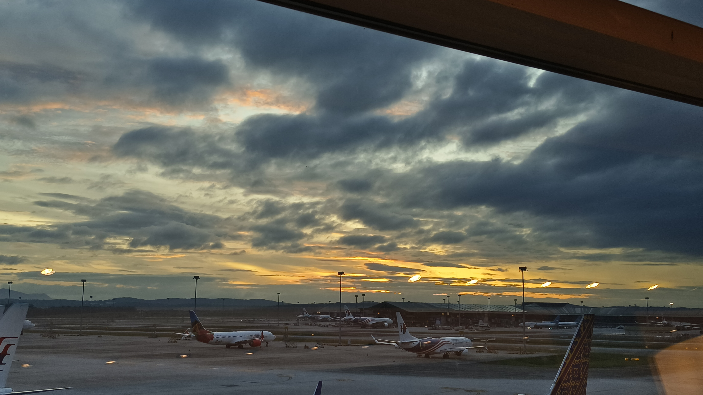

The most personally meaningful aspect of the in-country program was developing independent living skills, particularly navigating a new country and planning activities in an unfamiliar environment.
With many free evenings throughout the trip, I took the initiative to organize outings to scenic locations and other places of interest. While initially daunting, this process became easier over time as I gained experience in researching and coordinating plans. The greatest challenge was ensuring that the plans I made catered to everyone in the group, balancing diverse preferences and keeping my friends happy with the activities.
Despite this, I found the experience highly rewarding, as it taught me how to adapt and accommodate others while exploring independently.
My most significant achievement was learning and using phrases in Malay and Cantonese to communicate with locals. Understanding the nuances of their speech patterns deepened my cultural awareness and enhanced my ability to connect with the community.
